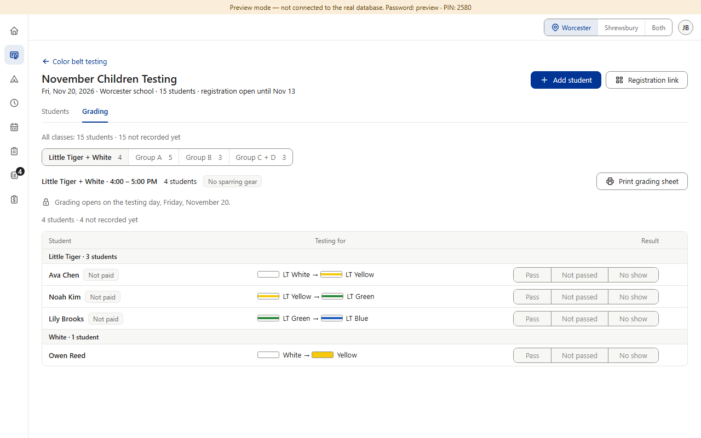
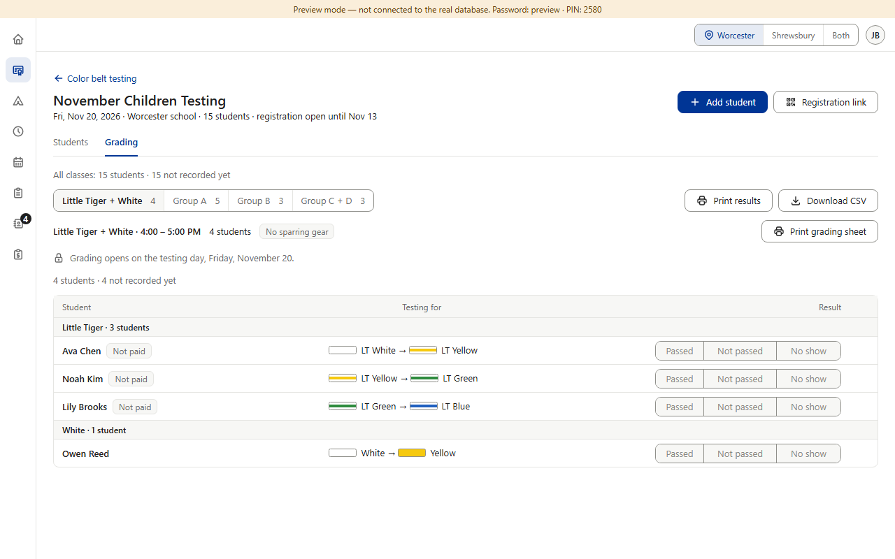
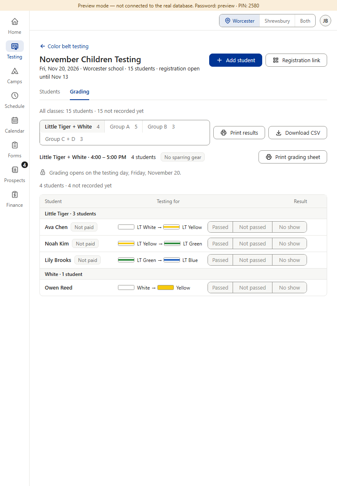
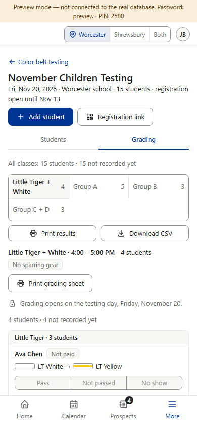
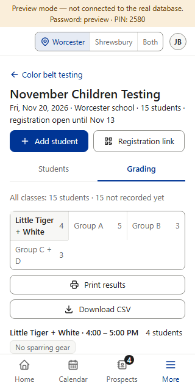
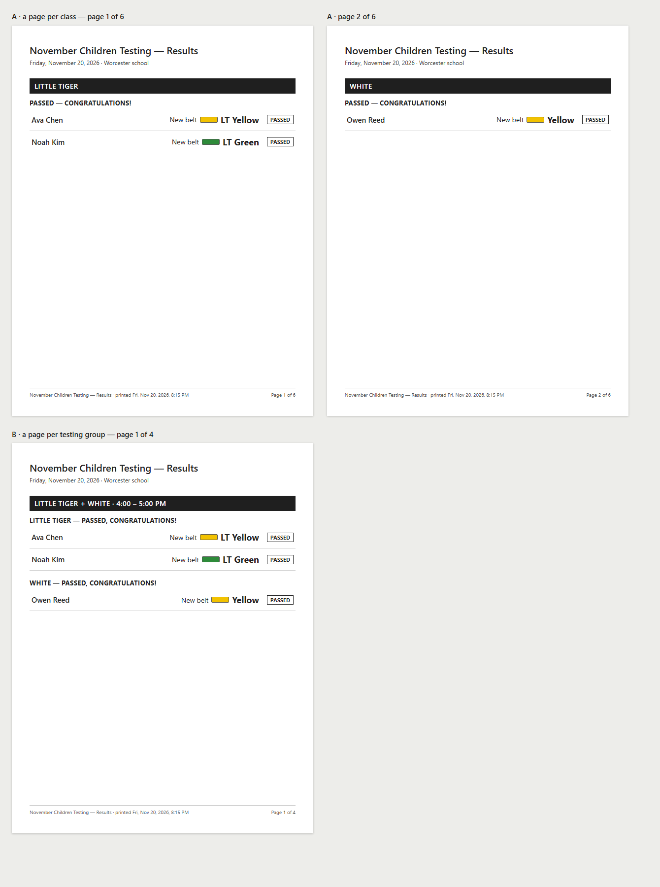

Already decided (v1.029): Star's Print results (who passed to which belt) and an admin-only Download CSV sit at the right of the class switch, as Star has them; the result button says “Passed” (“Not passed” and “No show” stay). “Passed” also replaces “Pass” on both printed grading sheets and in the note dialog's subtitle. One question at the bottom. (Preview screenshots, fake data; the “after” is drawn on the real page.)





